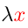

|  | Higher-Order Logic Explorer Bibliographic Cross-References |
|
| Mirrors > Home > HOL Home > Bibliographic Cross-References | ||
| Bibliographic Reference | Description | Higher-Order Logic Explorer Page(s) |
|---|
| This page was last updated on 14-Aug-2016.
Copyright terms: Public domain |
W3C HTML validation [external] |